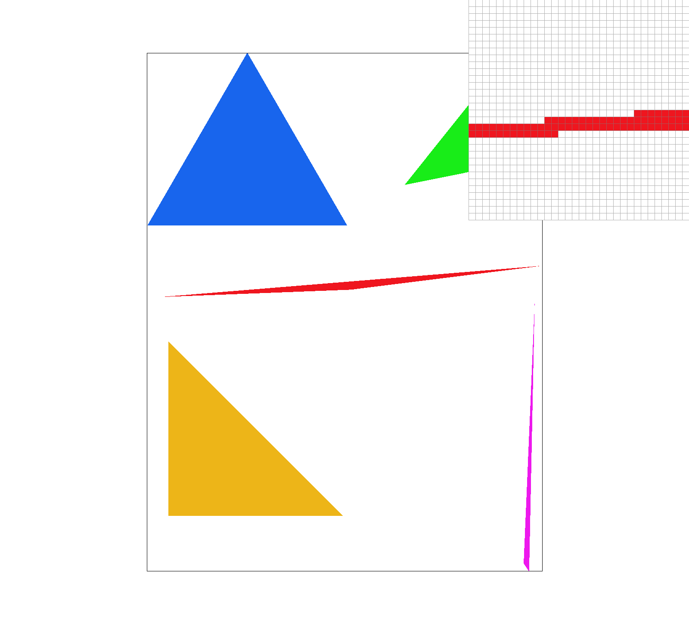

CS184/284A Spring 2025 Homework 1 Write-Up
Link to webpage: webpage
Link to GitHub repository: GitHub

Overview
Give a high-level overview of what you implemented in this homework. Think about what you've built as a whole. Share your thoughts on what interesting things you've learned from completing the homework.Task 1: Drawing Single-Color Triangles
To rasterize triangles I first calculate the triangle’s bounding box which is the smallest rectangle that fully contains the triangle. I loop over each pixel inside that box and sample the center point of the pixel at x plus 0.5 and y plus 0.5. Then I use edge functions to check if the point lies inside the triangle. If it does or if it lies exactly on the edge I color that pixel using fill_pixel.
This approach is no worse than checking every sample in the bounding box because it already checks every pixel once and does a constant number of operations per pixel. It avoids unnecessary extra sampling while still covering the full triangle accurately.
Task 2: Antialiasing by Supersampling
To implement supersampling, I created a sample buffer that stores multiple color samples per pixel instead of just one. If the sample rate is 4, I store a 2x2 grid of subsamples for each pixel; if it's 16, I store a 4x4 grid, and so on. This buffer has size width × height × sample_rate, and it holds floating-point Color values.
During triangle rasterization, instead of just checking the center of each pixel, I loop over each subsample location inside the pixel. I offset the x and y coordinates by small amounts to hit different points across the pixel’s area. For each of these subsample points, I check if it lies inside the triangle using edge functions, just like in Task 1. If it does, I color that subsample.
After rasterizing all triangles, I resolve the sample buffer to the final framebuffer by averaging all subsamples for each pixel into one final color. This way, edges that partially cover a pixel appear blended rather than jagged, producing a smoother image.
Supersampling is useful because it reduces aliasing artifacts like jagged edges, especially along triangle borders. By sampling multiple points within each pixel and averaging them, we simulate partial coverage and produce more accurate colors at edges.
Results (test4.svg at sample rates 1, 4, and 16)
These results show that with sample rate 1, triangle edges appear jagged and sharp transitions between triangle edges and background pixels are visible. At sample rate 4, the edges begin to smooth out, and by sample rate 16, the transitions are much more blended and clean. This is because higher sample rates better approximate the actual fraction of each pixel covered by the triangle, which allows for more accurate and visually pleasing edge representation.
Task 3: Transforms
For this assignment, I modified the original robot.svg to make Cubeman look like he’s hitting the Nae Nae, adding some personality and motion to the figure. I rotated his right arm upward at an angle to simulate the iconic arm motion of the dance, while keeping his left arm more grounded for balance. I angled his legs slightly to give a sense of rhythm and movement, as if he’s stepping into the pose mid-dance. The torso and head remain centered to anchor the pose, but the overall effect makes it feel like the robot is caught mid-Nae Nae. I used hierarchical SVG transforms like rotate, scale, and translate, which I implemented earlier in transforms.cpp, to achieve the desired effect.
Task 4: Barycentric Coordinates
Barycentric coordinates are a way of expressing any point inside a triangle as a weighted combination of the triangle’s three vertices. Each vertex is assigned a weight (between 0 and 1), and the sum of all three weights is 1. These weights determine how attributes like color are interpolated within the triangle. In this visualization, I created a pyramid-like shape using three connected triangles, where each corner of the triangles is assigned a distinct color: red, green, or blue. As the colors blend across the shape, we can clearly see the influence of each vertex's color fading smoothly toward the others. This effect illustrates how barycentric coordinates help render smooth color gradients within triangle meshes.

Task 5: Pixel Sampling for Texture Mapping
Pixel sampling is the process of determining how a texture is sampled at a specific point on a screen pixel. It’s a core component of texture mapping and directly impacts image sharpness and aliasing. Given a floating-point UV coordinate (which maps a screen point to a location in the texture), pixel sampling determines how to fetch the texture color at that location.
We implemented two types of pixel sampling:
- Nearest Sampling (P_NEAREST): This method rounds the floating-point UV coordinate to the nearest integer texel and uses its color. It is fast and simple but often results in a blocky or pixelated appearance, especially when textures are scaled or zoomed in.
- Bilinear Sampling (P_LINEAR): This method interpolates the colors of the four nearest texels using the fractional part of the UV coordinate. It produces smoother transitions and less visible aliasing, but it is slightly more computationally expensive.
To implement these methods, we added support in the Texture::sample function to call either sample_nearest or sample_bilinear based on the sampling mode passed in through a SampleParams struct. These functions calculate the texel values accordingly and return a Color object.
Visual Comparison Using Provided SVG
We explored the svg/texmap/ directory and selected a textured SVG file that shows a clear difference between nearest and bilinear sampling. Using the pixel inspector, we found areas of fine texture detail where aliasing is most apparent. We captured screenshots for the following configurations:
- P_NEAREST with 1 sample per pixel
- P_NEAREST with 16 samples per pixel
- P_LINEAR with 1 sample per pixel
- P_LINEAR with 16 samples per pixel
All screenshots were taken using the GUI 'S' hotkey. Below are the results:
P_NEAREST + 1 Sample
P_NEAREST + 16 Samples
P_LINEAR + 1 Sample
P_LINEAR + 16 Samples

Discussion of Differences
Bilinear sampling clearly outperforms nearest sampling in terms of smoothness, especially at low sample rates. With only 1 sample per pixel, nearest sampling produces visible jaggies and aliasing artifacts in high-frequency areas of the texture, whereas bilinear smooths these out effectively. Increasing the sample rate (e.g., to 16 samples per pixel) helps both methods by averaging across multiple subpixel samples, but nearest sampling still shows some harsh transitions that bilinear avoids.
The difference is most noticeable in textures with small details, like thin lines or repeating patterns. In those cases, bilinear helps reduce moiré patterns and shimmering effects. However, bilinear sampling is slightly slower and may introduce a minor blur, which could be undesirable if sharpness is prioritized.
Task 6: "Level Sampling" with Mipmaps for Texture Mapping
Level sampling is a technique used in texture mapping that determines which mipmap level to sample from when applying textures to 3D geometry. Mipmaps are precomputed, downscaled versions of a texture that help reduce aliasing when textures appear smaller on screen (e.g., at a distance or steep angle). The goal of level sampling is to choose the mipmap level that best represents the size of the texture footprint on screen.
In our implementation, we added support for three level sampling methods:
- L_ZERO: Always samples from the base (0-th) mipmap level, regardless of screen size. This is simple but prone to aliasing when textures are far away or minified.
- L_NEAREST: Chooses the nearest mipmap level based on the rate of change in UV coordinates (using screen-space derivatives). This balances performance and visual quality.
- L_LINEAR: Computes a fractional mipmap level and linearly interpolates between the two nearest mipmaps (trilinear filtering). This provides the smoothest transitions but is computationally more expensive.
To compute the mipmap level for a pixel, we used the UV coordinates at (x, y), (x+1, y), and (x, y+1) to estimate partial derivatives du/dx, dv/dx, du/dy, and dv/dy. These derivatives represent how fast the texture coordinates are changing across screen space, and we use them to approximate the texture footprint. The final mipmap level is determined using:
level = log2(max(sqrt(du/dx² + dv/dx²), sqrt(du/dy² + dv/dy²)))
We passed this level into the texture sampling functions. When using L_LINEAR, we performed linear interpolation between two adjacent mipmap levels. We also used the GUI controls to dynamically test all combinations of pixel and level sampling.
Trade-offs Between Sampling Techniques
You can now adjust pixel sampling (P_NEAREST vs P_LINEAR), level sampling (L_ZERO vs L_NEAREST vs L_LINEAR), and samples per pixel (1 vs 4 vs 16). Each has trade-offs:
- Pixel Sampling: P_NEAREST is faster but can appear blocky or pixelated. P_LINEAR is slower but provides smoother interpolation between texels.
- Level Sampling: L_ZERO is fastest but may introduce aliasing. L_NEAREST adds a slight cost for better visual quality. L_LINEAR offers the best visual fidelity but is the most expensive.
- Sample Rate: Higher sample rates (e.g., 16) help reduce aliasing in rasterization but increase memory usage and rendering time.
Visual Results from Different Sampling Combinations
Using a custom PNG image, we captured four screenshots demonstrating the different sampling combinations. The differences become most noticeable in zoomed-in or high-frequency texture regions.